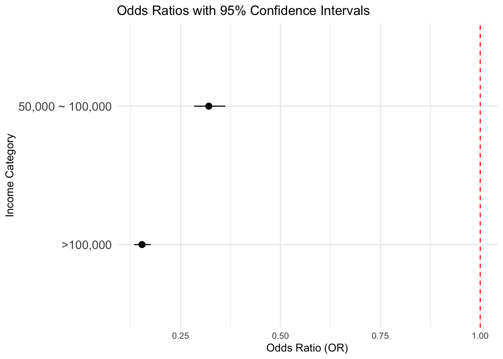
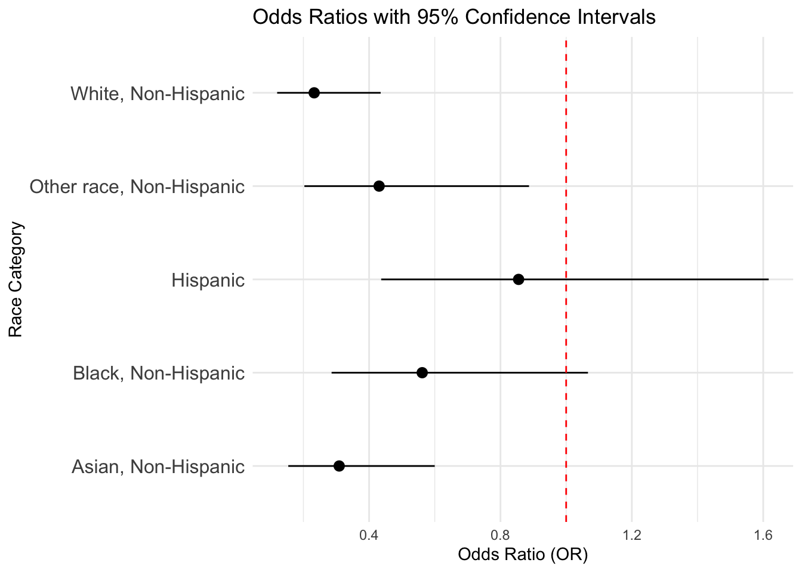
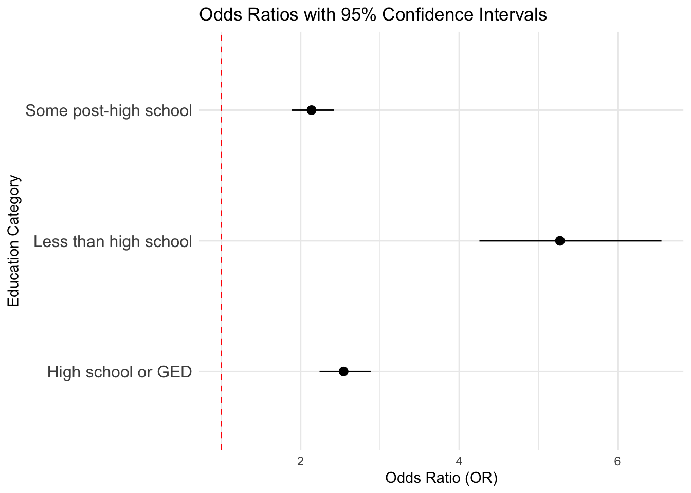

Data Analysis - Socioeconomic Factors
Data Importing and Cleaning
Visit report for detailed steps on how the data is cleaned.
brfss_22 = read_csv("NYSDOH_BRFSS_Survey_Data_2022.csv")|>
janitor::clean_names()
cleaned_df =
brfss_22 |>
filter(complete.cases(imprace, educag, incomg1, strsmeal_sa, genhlth, diabete4, ment14d, phys14d),
!str_detect(genhlth, "Not Sure|Refused"),
!str_detect(strsmeal_sa, "Not"),
!str_detect(incomg1, "Not"))|>
select(imprace, educag, incomg1, strsmeal_sa, genhlth, diabete4, ment14d, phys14d)
cleaned_df =
cleaned_df |>
mutate(
income = case_when(
incomg1 %in% c("Less than $15,000", "$15,000 to < $25,000", "$25,000 to < $35,000", "$35,000 to < $50,000") ~"<50,000",
incomg1 == "$50,000 to < $100,000" ~ "50,000 ~ 100,000",
incomg1 %in% c ("$100,000 to < $200,000" , "$200,000 or more") ~ ">100,000",
TRUE ~ NA_character_),
education = case_when(
educag == "Did not graduate High School" ~ "Less than high school",
educag == "Graduated High School" ~ "High school or GED",
educag == "Attended College or Technical School" ~ "Some post-high school",
educag == "Graduated from College or Technical School" ~ "College graduate"
),
food_insecure = case_when(
strsmeal_sa %in% c("Rarely","Sometimes","Usually", "Always") ~ 1,
strsmeal_sa == "Never" ~ 0),
health = case_when(
genhlth %in% c("Good", "Very good", "Excellent") ~ 1,
genhlth %in% c("Fair", "Poor") ~ 0),
physical_health = case_when(
phys14d %in% c("Zero days when physical health not good") ~ 1,
phys14d %in% c("1-13 days when physical health not good", "14+ days when physical health not good") ~ 0),
mental_health = case_when(
ment14d %in% c("Zero days when mental health not good") ~ 1,
ment14d %in% c("1-13 days when mental health not good", "14+ days when mental health not good") ~ 0),
diabete = case_when(
diabete4 %in% c("No") ~0,
diabete4%in% c("Yes") ~ 1)
)|>
filter(!is.na(income), !is.na(education), !is.na(physical_health), !is.na(mental_health), !is.na(diabete))|>
select(-educag, -diabete4)Key Socioeconomic Factors Distribution
Income
Using Original incomg1 Variable
cleaned_df |>
mutate(incomg1 = factor(incomg1, levels = c("Less than $15,000", "$15,000 to < $25,000", "$25,000 to < $35,000", "$35,000 to < $50,000", "$50,000 to < $100,000", "$100,000 to < $200,000", "$200,000 or more"))) |>
ggplot(aes(x = incomg1, fill = incomg1))+
geom_bar() +
labs(
title = "Distribution of Income",
x = "Income Category",
y = "Count"
) +
theme_minimal() +
theme(axis.text.x=element_blank())
Using the original incomg1 variable
defined in the BRFSS dataset, this bar chart illustrates the
distribution of income among individuals categorized into 7 levels:
“Less than $15,000”, “$15,000 to < $25,000”, “$25,000 to <
$35,000”, “$35,000 to < $50,000”, “$50,000 to < $100,000”,
“$100,000 to < $200,000”, and “$200,000 or more”. The largest group
comprises individuals earning $50,000 to < $100,000, followed closely
by those earning $100,000 to < $200,000. The other categories are
more evenly distributed, with the fewest individuals earning less than
$15,000. This chart highlights a trend toward middle- to higher-income
brackets, suggesting a skew toward financially stable individuals within
the dataset.
Using Created Variable income
cleaned_df |>
mutate(income = factor(income, levels = c("<50,000", "50,000 ~ 100,000", ">100,000"))) |>
ggplot(aes(x = factor(income), fill = factor(income))) +
geom_bar() +
labs(
title = "Bar Plot of Income",
x = "Income Status",
y = "Count",
fill = "Income"
) +
theme_minimal()
We categorized income into a three-level variable for our regression analysis, with “Less than $15,000” + “$15,000 to < $25,000” + “$25,000 to < $35,000” + “$35,000 to < $50,000” grouped as “<50,000”, “$50,000 to < $100,000” as “50,000 ~ 100,000”, and “$100,000 to < $200,000” + “$200,000 or more” grouped as “>100,000”. People earning less than $50,000 make up the largest group, followed by those earning over $100,000, with individuals earning between $50,000 and $100,000 forming the smallest group.
Race
ggplot(data = cleaned_df, aes(x = imprace, fill = imprace))+
geom_bar() +
labs(
title = "Distribution of Race/Ethnicity",
x = "Race/Ethnicity",
y = "Count"
) +
theme_minimal() +
theme(axis.text.x = element_text(angle = 75, hjust = 1)) 
This bar graph illustrates the distribution of race/ethnicity in the dataset. The categories include American Indian/Alaskan Native, Asian, Black, Hispanic, Other Race, and White, all specified as Non-Hispanic except for the Hispanic group. Among these groups, White, Non-Hispanic individuals dominate, with the highest count exceeding 6,000. The second most prevalent group is Hispanic, followed by Black, Non-Hispanic, while Other Race, Non-Hispanic, and Asian, Non-Hispanic, show significantly smaller counts. The American Indian/Alaskan Native, Non-Hispanic category represents the smallest group.
Education
ggplot(cleaned_df, aes(x = "", fill = education)) +
geom_bar(width = 1, stat = "count") +
coord_polar(theta = "y") +
labs(
title = "Distribution of Education Levels",
fill = "Education Level"
) +
theme_void() +
theme(legend.position = "right")
This pie chart shows the distribution of education levels within a dataset. The largest portion of the chart is represented by college graduates, shown in red, indicating that a significant proportion of individuals have completed higher education. The second-largest category, represented in purple, corresponds to individuals with some post-high school education. High school graduates or those with a GED, shown in green, form a smaller segment, while the smallest portion of the chart, in teal, represents individuals with less than a high school education.
Food Insecurity
Using Original strsmeal_sa
Variable
cleaned_df |>
mutate(strsmeal_sa = factor(strsmeal_sa, levels = c("Never", "Rarely","Sometimes","Usually", "Always"))) |>
ggplot(aes(x = strsmeal_sa, fill = strsmeal_sa))+
geom_bar() +
labs(
title = "Distribution of Food Insecurity",
x = "Food Insecurity Category",
y = "Count"
) +
theme_minimal() +
theme(axis.text.x=element_blank())
Using the original strsmeal_sa variable
defined in the BRFSS dataset, this bar chart illustrates the
distribution of income among individuals categorized into 5 levels:
Never, Rarely,
Sometimes, Usually, and
Always. The largest group comprises individuals who
never experience food insecurity, followed by those who rarely and
sometimes experience it, both at similar levels. The “Always” category
comes next, while “Usually” represents the smallest group. This
distribution highlights a trend where the majority of individuals report
never or infrequently experiencing meal insecurity.
Using Created Variable
food_insecure
ggplot(cleaned_df, aes(x = as.factor(food_insecure), fill = as.factor(food_insecure))) +
geom_bar() +
scale_fill_manual(values = c("0" = "lightblue", "1" = "pink"), labels = c("Not Food Insecure", "Food Insecure")) +
labs(
title = "Distribution of Food Insecurity",
x = "Food Insecurity",
y = "Count",
fill = "Status"
) +
theme_minimal()
We categorized food insecurity into a binary variable for our regression analysis, with status Rarely + Sometimes + Usually + Always as food insecure, and Never as secure. This bar graph presents the distribution of food insecurity status among individuals in the dataset. The largest group, represented in light blue, comprises individuals who are not food insecure, with a count exceeding 4,000. The second-largest group, shown in pink, represents individuals who are food insecure, numbering slightly over 2,000. A very small proportion, represented in gray, corresponds to missing data (NA) for food insecurity status.
cleaned_df =
cleaned_df |>
mutate(
imprace = as.factor(imprace),
income = as.factor(income),
education = as.factor(education)
)Logistic Regression Models
For all regression analyses, logistic regression was utilized, and the calculated odds ratios (ORs) were presented to interpret the relationships between variables.
Is Income Associated With Food Insecure?
Odds Ratio
logit_income =
glm(formula = food_insecure ~ income, data = cleaned_df, family = binomial)
exp_income = exp(cbind(OR=coef(logit_income),confint(logit_income)))
rownames(exp_income) = gsub("income", "", rownames(exp_income))
knitr::kable(exp_income)| OR | 2.5 % | 97.5 % | |
|---|---|---|---|
| (Intercept) | 1.2643678 | 1.1729452 | 1.3632163 |
| >100,000 | 0.1534791 | 0.1338561 | 0.1756158 |
| 50,000 ~ 100,000 | 0.3206974 | 0.2838710 | 0.3619826 |
Confidence Interval
ci_income = as.data.frame(exp_income)
ci_income =
ci_income |>
rownames_to_column("Variable") |>
filter(Variable != "(Intercept)") |>
ggplot(aes(y = Variable, x = OR, xmin = `2.5 %`, xmax = `97.5 %`)) +
geom_pointrange() +
geom_vline(xintercept = 1, linetype = "dashed", color = "red") +
labs(
title = "Odds Ratios with 95% Confidence Intervals",
x = "Odds Ratio (OR)",
y = "Income Category"
) +
theme_minimal() +
theme(axis.text.y = element_text(size = 12))
ci_income
Intercept:
- The odds ratio for the intercept (1.26) represents the baseline odds of being food insecure for income less than 50,000 when all predictors are 0. Since the 95% confidence interval (1.173, 1.363) does not include 1, it is statistically significant. Individuals with income less than $50,000 are 26% more likely to experience food insecurity compared to individuals not in this category.
OR:
- Income > 100,000: Individuals with an income level of over 100,000 are 85% less likely to experience food insecurity compared to the the reference group (income less than $50,000).
- Income 50,000–100,000: Individuals with an income level of 50,000–100,000 are 68% less likely to experience food insecurity compared to the reference group.
Statistical significance: Two ORs are significant because do not contain 1. Income is associated with food insecurity.
Is Race Associated With Food Insecure?
Odds Ratio
logit_race =
glm(food_insecure ~ imprace, data = cleaned_df, family = binomial)
exp_race = exp(cbind(OR=coef(logit_race),confint(logit_race)))
rownames(exp_race) = gsub("imprace", "", rownames(exp_race))
knitr::kable(exp_race)| OR | 2.5 % | 97.5 % | |
|---|---|---|---|
| (Intercept) | 1.7333333 | 0.9298898 | 3.3510888 |
| Asian, Non-Hispanic | 0.3089683 | 0.1539648 | 0.5998713 |
| Black, Non-Hispanic | 0.5617409 | 0.2858429 | 1.0663615 |
| Hispanic | 0.8552220 | 0.4368488 | 1.6166813 |
| Other race, Non-Hispanic | 0.4305396 | 0.2029831 | 0.8869536 |
| White, Non-Hispanic | 0.2327993 | 0.1200835 | 0.4352774 |
Confidence Interval
ci_race = as.data.frame(exp_race)
ci_race =
ci_race |>
rownames_to_column("Variable") |>
filter(Variable != "(Intercept)") |>
ggplot(aes(y = Variable, x = OR, xmin = `2.5 %`, xmax = `97.5 %`)) +
geom_pointrange() +
geom_vline(xintercept = 1, linetype = "dashed", color = "red") +
labs(
title = "Odds Ratios with 95% Confidence Intervals",
x = "Odds Ratio (OR)",
y = "Race Category"
) +
theme_minimal() +
theme(axis.text.y = element_text(size = 12))
ci_race
Intercept:
- The intercept represents the baseline odds of food insecurity for the reference group (American Indian/Alaskan Native). It is not significant because the 95% CI contains 1.
OR:
- Asian, Non-Hispanic: Non-Hispanic Asians have 69% lower odds of experiencing food insecurity compared to the reference group (American Indian/Alaskan Native).
- Black, Non-Hispanic: Non-Hispanic Blacks have 44% lower odds of experiencing food insecurity compared to the reference group.
- Hispanic: Hispanics have slightly lower odds (14% lower) of experiencing food insecurity compared to the reference group. It is not significant because the 95% CI contains 1.
- Other Race, Non-Hispanic: Individuals identifying as Non-Hispanic of other races have 67% lower odds of experiencing food insecurity compared to the reference group.
- White, Non-Hispanic: Non-Hispanic Whites have 77% lower odds of experiencing food insecurity compared to the reference group.
Statistical significance: Race is associated with food insecurity in certain groups. Non-Hispanic Asians, Whites, and individuals of other races have significantly lower odds of food insecurity compared to the reference group. However, the association is not statistically significant for Non-Hispanic Blacks and Hispanics.
Is Education Associated With Food Insecure?
Odds Ratio
logit_edu =
glm(food_insecure ~ education, data = cleaned_df, family = binomial)
exp_edu = exp(cbind(OR=coef(logit_edu),confint(logit_edu)))
rownames(exp_edu) = gsub("education", "", rownames(exp_edu))
knitr::kable(exp_edu)| OR | 2.5 % | 97.5 % | |
|---|---|---|---|
| (Intercept) | 0.3310212 | 0.3062865 | 0.3573961 |
| High school or GED | 2.5420228 | 2.2383501 | 2.8874147 |
| Less than high school | 5.2714644 | 4.2553306 | 6.5520655 |
| Some post-high school | 2.1372314 | 1.8865285 | 2.4213518 |
Confidence Interval
ci_edu = as.data.frame(exp_edu)
ci_edu =
ci_edu |>
rownames_to_column("Variable") |>
filter(Variable != "(Intercept)") |>
ggplot(aes(y = Variable, x = OR, xmin = `2.5 %`, xmax = `97.5 %`)) +
geom_pointrange() +
geom_vline(xintercept = 1, linetype = "dashed", color = "red") +
labs(
title = "Odds Ratios with 95% Confidence Intervals",
x = "Odds Ratio (OR)",
y = "Education Category"
) +
theme_minimal() +
theme(axis.text.y = element_text(size = 12))
ci_edu
Intercept:
- The intercept represents the baseline odds of food insecurity for the reference group (college graduates) when all predictors are zero. Since the 95% confidence interval (0.306, 0.357) does not include 1, it is statistically significant. Individuals who are college graduates are 67% less likely to experience food insecurity compared to individuals not in this category.
OR:
- High School or GED: Individuals with a high school diploma or GED have 154% the odds of experiencing food insecurity compared to the reference group (college graduates).
- Less than High School: Individuals with less than a high school education have 427% higher odds of experiencing food insecurity compared to the reference group.
- Some Post-High School: Individuals with some post-high school education have 114% higher odds of experiencing food insecurity compared to the reference group.
Statistical significance: The odds of food insecurity increase as the level of education decreases. Those with less than a high school education have the greatest increase in odds compared to the reference group.
Are Race, Education, and Income Associated With Food Insecure?
Odds Ratio
logit_all =
glm(food_insecure ~ education + income + imprace, data = cleaned_df, family = binomial)
exp_all = exp(cbind(OR=coef(logit_all),confint(logit_all)))
rownames(exp_all) = gsub("education|income|imprace", "", rownames(exp_all))
knitr::kable(exp_all)| OR | 2.5 % | 97.5 % | |
|---|---|---|---|
| (Intercept) | 1.8961390 | 0.9737757 | 3.8342042 |
| High school or GED | 1.3693978 | 1.1863615 | 1.5800515 |
| Less than high school | 1.5853740 | 1.2451754 | 2.0222613 |
| Some post-high school | 1.4689584 | 1.2818859 | 1.6827543 |
| >100,000 | 0.2104580 | 0.1812010 | 0.2440199 |
| 50,000 ~ 100,000 | 0.4014218 | 0.3527578 | 0.4564932 |
| Asian, Non-Hispanic | 0.5142870 | 0.2457193 | 1.0402914 |
| Black, Non-Hispanic | 0.7158818 | 0.3500425 | 1.4118335 |
| Hispanic | 0.9450719 | 0.4640768 | 1.8546070 |
| Other race, Non-Hispanic | 0.5909596 | 0.2660921 | 1.2737355 |
| White, Non-Hispanic | 0.3763712 | 0.1866237 | 0.7309784 |
Confidence Interval
ci_all = as.data.frame(exp_all)
ci_all =
ci_all |>
rownames_to_column("Variable") |>
filter(Variable != "(Intercept)") |>
ggplot(aes(y = Variable, x = OR, xmin = `2.5 %`, xmax = `97.5 %`)) +
geom_pointrange() +
geom_vline(xintercept = 1, linetype = "dashed", color = "red") +
labs(
title = "Odds Ratios with 95% Confidence Intervals",
x = "Odds Ratio (OR)",
y = "Categories"
) +
theme_minimal() +
theme(axis.text.y = element_text(size = 12))
ci_all
Statistical Significant Predictors:
Education:
- Individuals with a high school diploma or GED have 36.9% higher odds
of experiencing food insecurity compared to the reference group (college
graduates).
- Individuals with less than a high school education have 58.5% higher
odds of experiencing food insecurity compared to the reference
group.
- Individuals with some post-high school education have 46.9% higher odds of experiencing food insecurity compared to the reference group.
Income:
- Individuals with an income over $100,000 have 79.0% lower odds of
experiencing food insecurity compared to the reference group (≤
50,000).
- Individuals with an income between $50,000 and $100,000 have 59.9% lower odds of experiencing food insecurity compared to the reference group.
Race/Ethnicity:
- Non-Hispanic Whites have 62.4% lower odds of experiencing food insecurity compared to the reference group.
Summary: Higher education levels are protective against food insecurity, with individuals who have less than a high school education facing the highest risk. Those with less than a high school education have 58.5% higher odds of experiencing food insecurity compared to those with a college education. Income also plays a significant role, as individuals earning more than $100,000 have 79.0% lower odds of food insecurity, highlighting the strong protective effect of higher income levels. Finally, race and ethnicity are associated with differences in food insecurity, with non-Hispanic Whites showing significantly lower odds of food insecurity compared to other racial groups. However, results for other racial groups are not statistically significant, indicating variability in these associations.